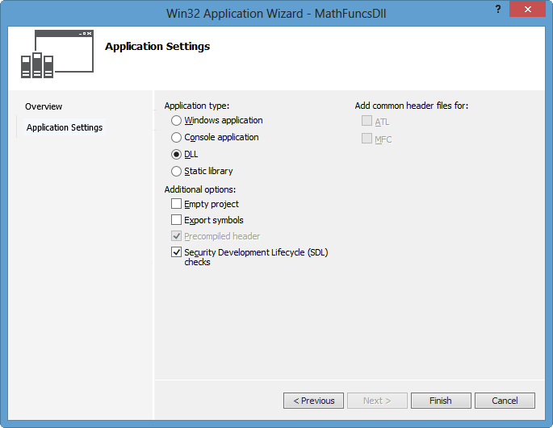
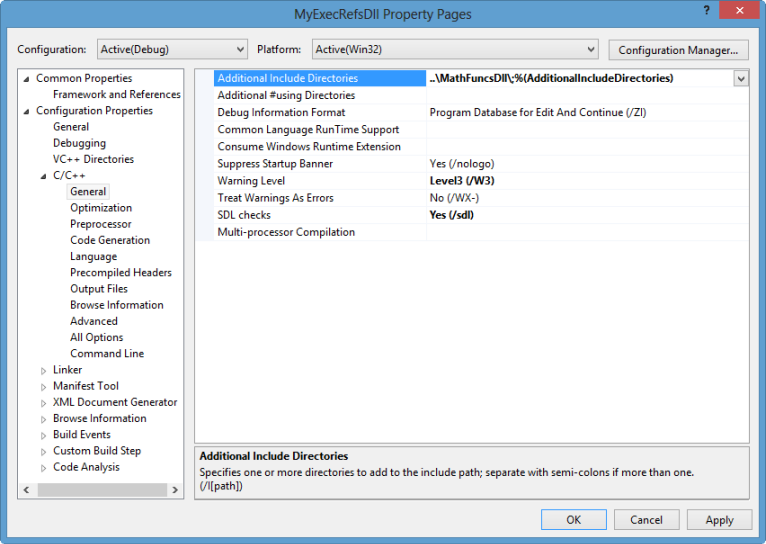
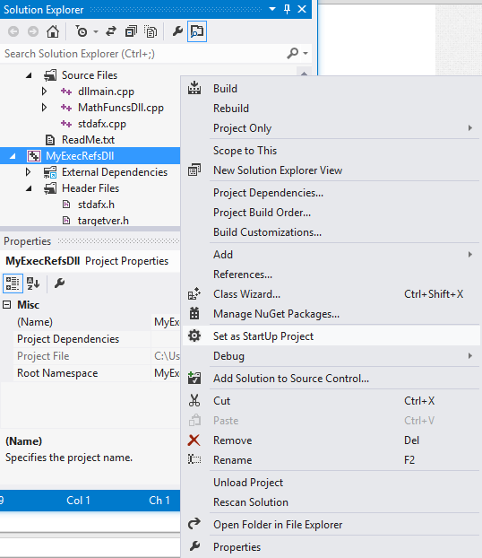

Win32 API
- Win32 API - Introduction
- Win32 API - C Run Time Libraries
- Calling Conventions
- Win32 API - DLL
- Win32 API - MFC
- Kernel Objects, Handles, and Synchronization
Sponsor Open Source development activities and free contents for everyone.
Thank you.
- K Hong

List of C++ Tutorials
- C++ Home
- Algorithms & Data Structures in C++ ...
- Application (UI) - using Windows Forms (Visual Studio 2013/2012)
- auto_ptr
- Binary Tree Example Code
- Blackjack with Qt
- Boost - shared_ptr, weak_ptr, mpl, lambda, etc.
- Boost.Asio (Socket Programming - Asynchronous TCP/IP)...
- Classes and Structs
- Constructor
- C++11(C++0x): rvalue references, move constructor, and lambda, etc.
- C++ API Testing
- C++ Keywords - const, volatile, etc.
- Debugging Crash & Memory Leak
- Design Patterns in C++ ...
- Dynamic Cast Operator
- Eclipse CDT / JNI (Java Native Interface) / MinGW
- Embedded Systems Programming I - Introduction
- Embedded Systems Programming II - gcc ARM Toolchain and Simple Code on Ubuntu and Fedora
- Embedded Systems Programming III - Eclipse CDT Plugin for gcc ARM Toolchain
- Exceptions
- Friend Functions and Friend Classes
- fstream: input & output
- Function Overloading
- Functors (Function Objects) I - Introduction
- Functors (Function Objects) II - Converting function to functor
- Functors (Function Objects) - General
- Git and GitHub Express...
- GTest (Google Unit Test) with Visual Studio 2012
- Inheritance & Virtual Inheritance (multiple inheritance)
- Libraries - Static, Shared (Dynamic)
- Linked List Basics
- Linked List Examples
- make & CMake
- make (gnu)
- Memory Allocation
- Multi-Threaded Programming - Terminology - Semaphore, Mutex, Priority Inversion etc.
- Multi-Threaded Programming II - Native Thread for Win32 (A)
- Multi-Threaded Programming II - Native Thread for Win32 (B)
- Multi-Threaded Programming II - Native Thread for Win32 (C)
- Multi-Threaded Programming II - C++ Thread for Win32
- Multi-Threaded Programming III - C/C++ Class Thread for Pthreads
- MultiThreading/Parallel Programming - IPC
- Multi-Threaded Programming with C++11 Part A (start, join(), detach(), and ownership)
- Multi-Threaded Programming with C++11 Part B (Sharing Data - mutex, and race conditions, and deadlock)
- Multithread Debugging
- Object Returning
- Object Slicing and Virtual Table
- OpenCV with C++
- Operator Overloading I
- Operator Overloading II - self assignment
- Pass by Value vs. Pass by Reference
- Pointers
- Pointers II - void pointers & arrays
- Pointers III - pointer to function & multi-dimensional arrays
- Preprocessor - Macro
- Private Inheritance
- Python & C++ with SIP
- (Pseudo)-random numbers in C++
- References for Built-in Types
- Socket - Server & Client
- Socket - Server & Client with Qt (Asynchronous / Multithreading / ThreadPool etc.)
- Stack Unwinding
- Standard Template Library (STL) I - Vector & List
- Standard Template Library (STL) II - Maps
- Standard Template Library (STL) II - unordered_map
- Standard Template Library (STL) II - Sets
- Standard Template Library (STL) III - Iterators
- Standard Template Library (STL) IV - Algorithms
- Standard Template Library (STL) V - Function Objects
- Static Variables and Static Class Members
- String
- String II - sstream etc.
- Taste of Assembly
- Templates
- Template Specialization
- Template Specialization - Traits
- Template Implementation & Compiler (.h or .cpp?)
- The this Pointer
- Type Cast Operators
- Upcasting and Downcasting
- Virtual Destructor & boost::shared_ptr
- Virtual Functions
- Programming Questions and Solutions ↓
- Strings and Arrays
- Linked List
- Recursion
- Bit Manipulation
- Small Programs (string, memory functions etc.)
- Math & Probability
- Multithreading
- 140 Questions by Google
- Qt 5 EXPRESS...
- Win32 DLL ...
- Articles On C++
- What's new in C++11...
- C++11 Threads EXPRESS...
- OpenCV...
In this page, we will create a dll and then it will be referenced from a newly created Win32 console application.
I used Visual Studio Express 2012, and the files are here.
A dynamic-link library (DLL) is an executable file that acts as a shared library of functions. Dynamic linking provides a way for a process to call a function that is not part of its executable code. The executable code for the function is located in a DLL, which contains one or more functions that are compiled, linked, and stored separately from the processes that use them.
DLLs also facilitate the sharing of data and resources. Multiple applications can simultaneously access the contents of a single copy of a DLL in memory. Dynamic linking differs from static linking in that it allows an executable module (either a .dll or .exe file) to include only the information needed at run time to locate the executable code for a DLL function.
In static linking, the linker gets all of the referenced functions from the static link library and places it with our code into our executable. Using dynamic linking instead of static linking offers several advantages. DLLs save memory, reduce swapping, save disk space, upgrade easier, provide after-market support, provide a mechanism to extend the MFC library classes, support multi language programs, and ease the creation of international versions.
- An exe always runs in its own address space i.e., It is a separate process.
- The purpose of an EXE is to launch a separate application of its own.
- An EXE file contains the entry point or the part in the code where the operating system is supposed to begin the execution of the application.
- DLL is Microsoft's implementation of a shared library. The file format of DLL and exe is essentially the same. Windows recognizes the difference between DLL and EXE through PE Header in the file.
- Its reusability is the most major advantage of DLL files. A DLL file can be used in other applications as long as the coder knows the names and parameters of the functions and procedures in the DLL file. Because of this capability, DLL files are ideal for distributing device drivers. The DLL would facilitate the communication between the hardware and the application that wishes to use it. The application would not need to know the intricacies of accessing the hardware just as long as it is capable of calling the functions on the DLL.
- DLL files do not have this entry point and cannot be executed on their own. In other words, a dll always needs a host exe to run. i.e., it can never run in its own address space. The purpose of a DLL is to have a collection of methods/classes which can be re-used from some other application.
We can declare C++ classes with the dllimport or dllexport attribute. These forms imply that the entire class is imported or exported. Classes exported this way are called exportable classes.
The following example defines an exportable class. All its member functions and static data are exported:
#define DllExport __declspec( dllexport )
class DllExport C {
int i;
virtual int func( void ) { return 1; }
};
- __declspec(dllexport) tells the linker that we want this object to be made available for other app's to import. It is used when creating a dll that others can link to.
When we declare a class dllexport, all its member functions and static data members are exported. We must provide the definitions of all such members in the same program. Otherwise, a linker error is generated. - __declspec(dllimport) imports the implementation from a dll so our application can make reference to it.
When we declare a class dllimport, all its member functions and static data members are imported. Unlike the behavior of dllimport and dllexport on nonclass types, static data members cannot specify a definition in the same program in which a dllimport class is defined.
To create a dynamic link library (DLL) project:
- On the menu bar, choose File, New, Project.
- In the left pane of the New Project dialog box, expand Installed, Templates, Visual C++, and then select Win32.
- In the center pane, select Win32 Console Application.
- Specify a name for the project-for example, MathFuncsDll-in the Name box. Specify a name for the solution-for example, DynamicLibrary-in the Solution name box. Choose the OK button.
- On the Overview page of the Win32 Application Wizard dialog box, choose the Next button.
- On the Application Settings page, under Application type, select DLL.

- Choose the Finish button to create the project.
To create a dynamic link library (DLL) project:
- To create a header file for a new class, on the menu bar, choose Project, Add New Item. In the Add New Item dialog box, in the left pane, under Visual C++, select Code. In the center pane, select Header File (.h). Specify a name for the header file-for example, MathFuncsDll.h-and then choose the Add button. A blank header file is displayed.
- Add the following code to the beginning of the header file:
// MathFuncsDll.h #ifdef MATHFUNCSDLL_EXPORTS #define MATHFUNCSDLL_API __declspec(dllexport) #else #define MATHFUNCSDLL_API __declspec(dllimport) #endif
When the MATHFUNCSDLL_EXPORTS symbol is defined, the MATHFUNCSDLL_API symbol will set the __declspec(dllexport) modifier in the member function declarations in this code. This modifier enables the function to be exported by the DLL so that it can be used by other applications.
When MATHFUNCSDLL_EXPORTS is undefined, MATHFUNCSDLL_API defines the __declspec(dllimport) modifier in the member function declarations. This modifier enables the compiler to optimize the importing of the function from the DLL for use in other applications. By default, MATHFUNCSDLL_EXPORTS is defined when our MathFuncsDll project is built.
- Add a basic class named MyMathFuncs to perform common mathematical operations such as addition, subtraction, multiplication, and division. The code should resemble this:
namespace MathFuncs { // This class is exported from the MathFuncsDll.dll class MyMathFuncs { public: // Returns a + b static MATHFUNCSDLL_API double Add(double a, double b); // Returns a - b static MATHFUNCSDLL_API double Subtract(double a, double b); // Returns a * b static MATHFUNCSDLL_API double Multiply(double a, double b); // Returns a / b // Throws const std::invalid_argument& if b is 0 static MATHFUNCSDLL_API double Divide(double a, double b); }; }If we're building the DLL project on the command line, use the /D compiler option to define the MATHFUNCSDLL_EXPORTS symbol.
- In the MathFuncsDll project in Solution Explorer, in the Source Files folder, open MathFuncsDll.cpp.
- Implement the functionality for MyMathFuncs in the source file. The code should resemble this:
// MathFuncsDll.cpp : Defines the exported functions for the DLL application. // #include "stdafx.h" #include "MathFuncsDll.h" #include <stdexcept> using namespace std; namespace MathFuncs { double MyMathFuncs::Add(double a, double b) { return a + b; } double MyMathFuncs::Subtract(double a, double b) { return a - b; } double MyMathFuncs::Multiply(double a, double b) { return a * b; } double MyMathFuncs::Divide(double a, double b) { if (b == 0) { throw invalid_argument("b cannot be zero!"); } return a / b; } } Compile the dynamic link library by choosing Build, Build Solution on the menu bar.
If we're using an Express edition that does not display a Build menu (2012 Express version has the Build menu), on the menu bar, choose Tools, Settings, Expert Settings to enable it, and then choose Build, Build Solution.
If we're building a project on the command line, use the /LD compiler option to specify that the output file is to be a DLL. For more information, check /MD, /MT, /LD (Use Run-Time Library) as well. Use the /EHsc compiler option to enable C++ exception handling.
- Then, the build will generate our dll:
1>------ Build started: Project: MathFuncsDll, Configuration: Debug Win32 ------ 1> stdafx.cpp 1> dllmain.cpp 1> MathFuncsDll.cpp 1> Creating library c:\users\KHyuck\documents\visual studio 2012\Projects\DynamicLibrary\Debug\MathFuncsDll.lib and object c:\users\KHyuck\documents\visual studio 2012\Projects\DynamicLibrary\Debug\MathFuncsDll.exp 1> MathFuncsDll.vcxproj -> c:\users\KHyuck\documents\visual studio 2012\Projects\DynamicLibrary\Debug\MathFuncsDll.dll ========== Build: 1 succeeded, 0 failed, 0 up-to-date, 0 skipped ==========
Here we're going to create a C++ app that will reference and use the DLL that we just created.
- On the menu bar, choose File, New, Project.
- In the left pane, under Visual C++, select Win32.
- In the center pane, select Win32 Console Application.
- Specify a name for the project-for example, MyExecRefsDll-in the Name box. Next to Solution, select Add to Solution from the drop-down list. This adds the new project to the same solution that contains the DLL. Choose the OK button.
- On the Overview page of the Win32 Application Wizard dialog box, choose the Next button.
- On the Application Settings page, under Application type, select Console application.
- On the Application Settings page, under Additional options, clear the Precompiled header check box.
- Choose the Finish button to create the project.
- After we create a console app, an empty program is created for us. The name for the source file is the same as the name that we chose earlier. In this example, it is named MyExecRefsDll.cpp.
- To use the math routines that we created in the DLL, we must reference it. To do this, select the MyExecRefsDll project in Solution Explorer, and then on the menu bar, choose Project, References. In the Property Pages dialog box, expand the Common Properties node, select Framework and References, and then choose the Add New Reference button.
- The Add Reference dialog box lists the libraries that we can reference. The Project tab lists the projects in the current solution and any libraries that they contain. On the Projects tab, select the check box next to MathFuncsDll, and then choose the OK button.
- To reference the header files of the DLL, we must modify the included directories path. To do this, in the Property Pages dialog box, expand the Configuration Properties node, expand the C/C++ node, and then select General. Next to Additional Include Directories, specify the path of the location of the MathFuncsDll.h header file. We can use a relative path-for example, ..\MathFuncsDll\-then choose the OK button.

-
We can now use the MyMathFuncs class in this application.
Replace the contents of MyExecRefsDll.cpp with the following code:// MyExecRefsDll.cpp // compile with: /EHsc /link MathFuncsDll.lib #include <iostream> #include "MathFuncsDll.h" using namespace std; int main() { double a = 7.4; int b = 99; cout << "a + b = " << MathFuncs::MyMathFuncs::Add(a, b) << endl; cout << "a - b = " << MathFuncs::MyMathFuncs::Subtract(a, b) << endl; cout << "a * b = " << MathFuncs::MyMathFuncs::Multiply(a, b) << endl; cout << "a / b = " << MathFuncs::MyMathFuncs::Divide(a, b) << endl; try { cout << "a / 0 = " << MathFuncs::MyMathFuncs::Divide(a, 0) << endl; } catch (const invalid_argument &e) { cout << "Caught exception: " << e.what() << endl; } return 0; } - Here are the Property Pages' command lines:
- C/C++
/GS /analyze- /W3 /Zc:wchar_t /I"..\MathFuncsDll\" /ZI /Gm /Od /sdl /Fd"Debug\vc110.pdb" /fp:precise /D "WIN32" /D "_DEBUG" /D "_CONSOLE" /D "_UNICODE" /D "UNICODE" /errorReport:prompt /WX- /Zc:forScope /RTC1 /Gd /Oy- /MDd /Fa"Debug\" /EHsc /nologo /Fo"Debug\" /Fp"Debug\MyExecRefsDll.pch" - Linker
/OUT:"C:\Users\KHyuck\documents\visual studio 2012\Projects\DynamicLibrary\Debug\MyExecRefsDll.exe" /MANIFEST /NXCOMPAT /PDB:"C:\Users\KHyuck\documents\visual studio 2012\Projects\DynamicLibrary\Debug\MyExecRefsDll.pdb" /DYNAMICBASE "kernel32.lib" "user32.lib" "gdi32.lib" "winspool.lib" "comdlg32.lib" "advapi32.lib" "shell32.lib" "ole32.lib" "oleaut32.lib" "uuid.lib" "odbc32.lib" "odbccp32.lib" "C:\Users\KHyuck\documents\visual studio 2012\Projects\DynamicLibrary\Debug\MathFuncsDll.lib" /DEBUG /MACHINE:X86 /INCREMENTAL /PGD:"C:\Users\KHyuck\documents\visual studio 2012\Projects\DynamicLibrary\Debug\MyExecRefsDll.pgd" /SUBSYSTEM:CONSOLE /MANIFESTUAC:"level='asInvoker' uiAccess='false'" /ManifestFile:"Debug\MyExecRefsDll.exe.intermediate.manifest" /ERRORREPORT:PROMPT /NOLOGO /TLBID:1
- C/C++
- Build the executable by choosing Build, Build Solution on the menu bar. To see the whole things, I chose to rebuild the solution:
1>------ Rebuild All started: Project: MathFuncsDll, Configuration: Debug Win32 ------ 1> stdafx.cpp 1> dllmain.cpp 1> MathFuncsDll.cpp 1> Creating library C:\Users\KHyuck\documents\visual studio 2012\Projects\DynamicLibrary\Debug\MathFuncsDll.lib and object C:\Users\KHyuck\documents\visual studio 2012\Projects\DynamicLibrary\Debug\MathFuncsDll.exp 1> MathFuncsDll.vcxproj -> C:\Users\KHyuck\documents\visual studio 2012\Projects\DynamicLibrary\Debug\MathFuncsDll.dll 2>------ Rebuild All started: Project: MyExecRefsDll, Configuration: Debug Win32 ------ 2> stdafx.cpp 2> MyExecRefsDll.cpp 2> Generating Code... 2> MyExecRefsDll.vcxproj -> C:\Users\KHyuck\documents\visual studio 2012\Projects\DynamicLibrary\Debug\MyExecRefsDll.exe ========== Rebuild All: 2 succeeded, 0 failed, 0 skipped ==========
We need to make sure that MyExecRefsDll is selected as the default project. In Solution Explorer, select MyExecRefsDll, and then on the menu bar, choose Project, Set As StartUp Project.

To run the project, on the menu bar, choose Debug, Start Without Debugging. The output should resemble this:
a + b = 106.4 a - b = -91.6 a * b = 732.6 a / b = 0.0747475 Caught exception: b cannot be zero!
For more on porting, please visit
C++ Libraries : Porting - Windows